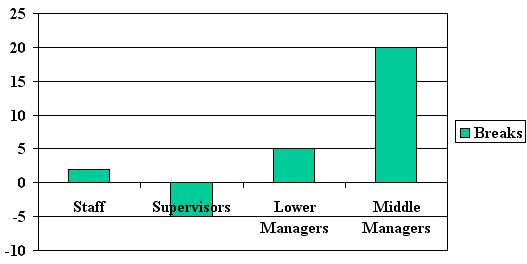
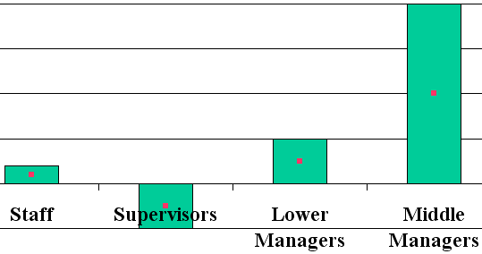
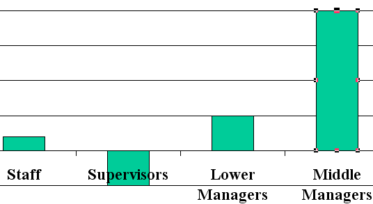
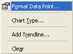
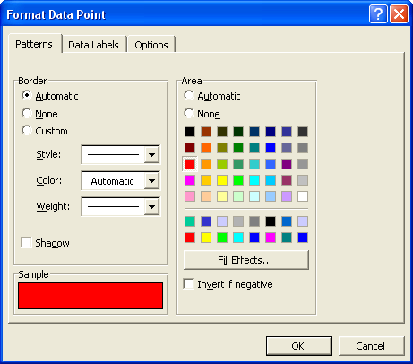
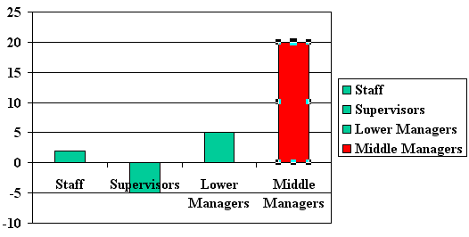
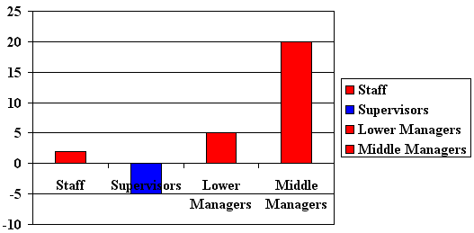

Free
powerpoint
Tutorials
|
Free
powerpoint
Tutorials
|
|
 home home |
Stay at Home and Learn | ||||
Format the 2D PowerPoint Chart |
|||||
|
Charts 1, 2, 3, 4, 5, 6, 7, 8, 9, 10, 11, 12 Flow Charts Tables
We can format the bars of our 2D chart, and give them a different colour. Supervisors will be blue, and the other three red. This is what your chart should look like at the moment:  So click on the Middle Managers bar. This will actually select all four bars on the chart:  When you see a red square on each of the bars then you know they are all selected. To select just the Middle Managers bar, click it again. Just this bar will have red squares on it:  When your Middle Managers bar looks like the one above, right click it. You'll see a context menu appear:  Select Format Data Point from the menu. You'll see the Format dialogue box appear:  Select red from the colours on the right, then click OK. Your chart will change to this:  Notice how we now have four items in the Series Legend on the right. But select the Lower Mangers bar so that only it has the squares surrounding it, instead of the Middle Managers bar. Then do the same thing - right click, select Format Data Point from the menu, then pick red for the colour. Change the Staff bar to red in the same way, and change the Supervisors
bar to blue. Your chart will then look like this one: 
Now that we have formatted the bars, we can add a background pattern to the chart. We'll do this in the next PowerPoint lesson.
|
||||